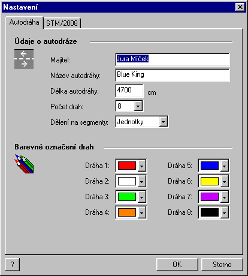
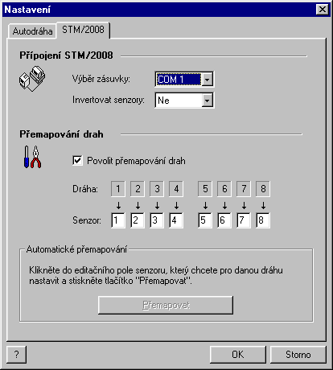

(Command Tools | Settings)
In this property sheet dialog window you may set up the basic parameters of the track and STM/2008 communication.
Put in the owner's name, the track's name and its length in centimeters (so that correct average speed may be correctly calculated). Very important is the correct assignment of the colors to the lanes.
Switch to the STM/2008 page of the property sheet. Here you may set up the parameters of the connection to the STM/2008 device which works as the interface between your track and the PC. Specify the COM port which the track is connected to (Port selection item) and specify whether to invert the sensors or not (Invert sensors item). Dead strip tracks usually don't require the sensors to be inverted, tracks with the optical sensors usually do.
The Sensor - Lane mapping allows you to assign arbitrary lane to any sensor. By default, the sensor 1 is mapped to the lane 1, sensor 2 to lane 2 and so on. You may use this if the sensors were assigned in a different manner. If you are not sure, which sensor is assigned to which lane, use the Automatic mapping feature which is described in the dialog window itself.
Note for MS Windows NT, 2000 and XP users: After the installation of the program, on the first operation which requires a communication between the PC and STM/2008 (any race mode or lane mapping is started), a dialog window to set up the serial port parameters is shown. Put in the following: